机器学习算法
一、 KNN（K近邻）算法
- KNN：K近邻算法
- K：K个
- N：Nearest（最近的）
- N：Neighbors（邻居）
1. 典型代表: knn(k近邻算法)
既能做分类任务,也能做回归任务
核心思想
- 找到要预测的数据的k个最近的邻居,分类任务做投票取最多的类别,回归任务直接取平均值
分类任务API应用
- API：==sklearn.neighbors.KNeighborsClassifier==
回归任务API应用
- API：==sklearn.neighbors.KNeighborsRegressor==
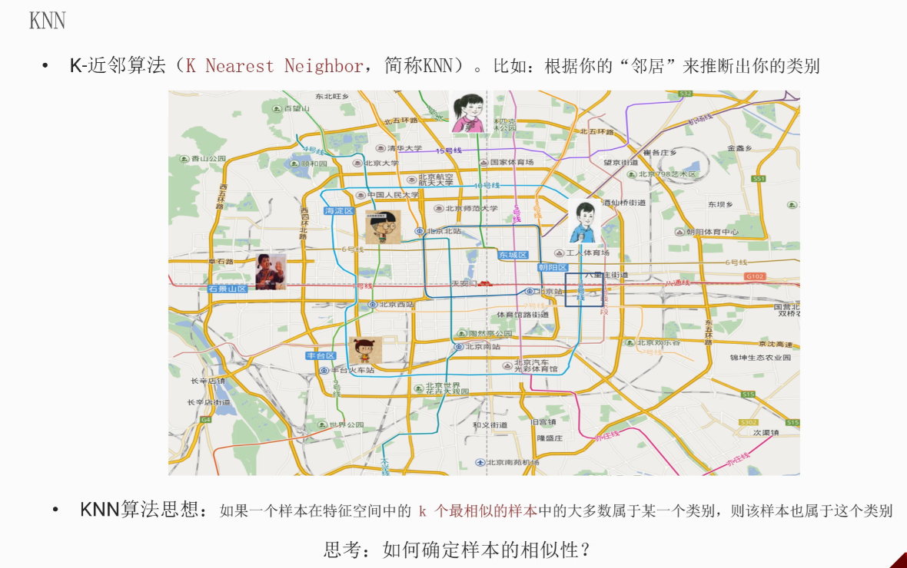
2. 通用知识
距离度量：
- 欧式距离
- 曼哈顿距离/城市街区距离
- 闵可夫斯基距离/闵氏距离
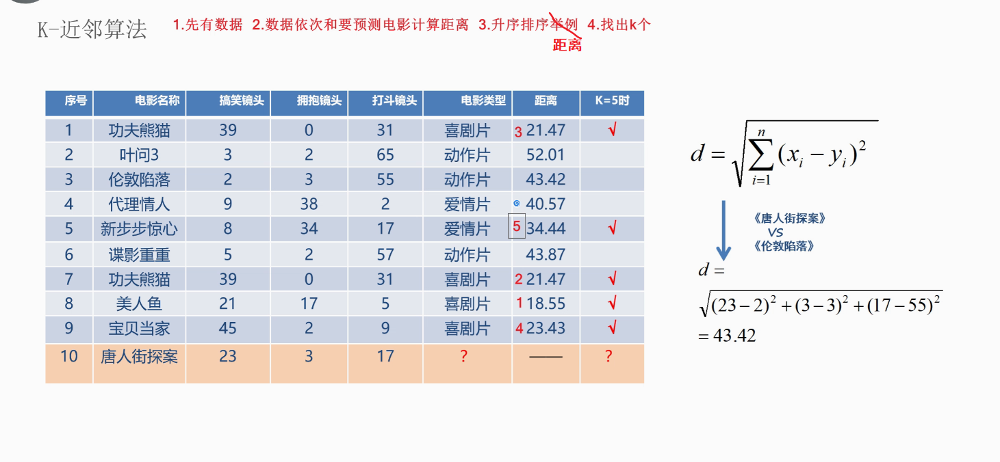
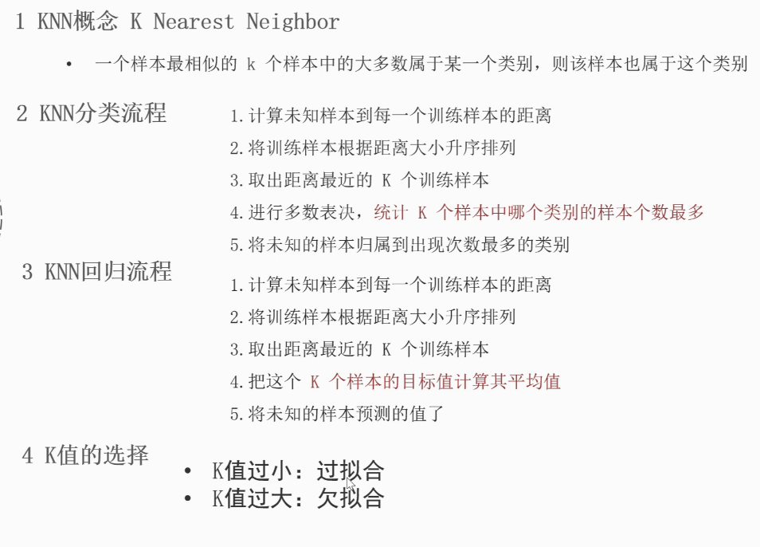
过拟合：
一种是真的学过头了
另一种是死记硬背
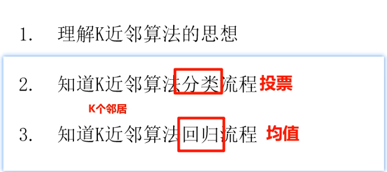
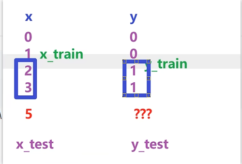
- 距离度量公式
- 欧式距离：
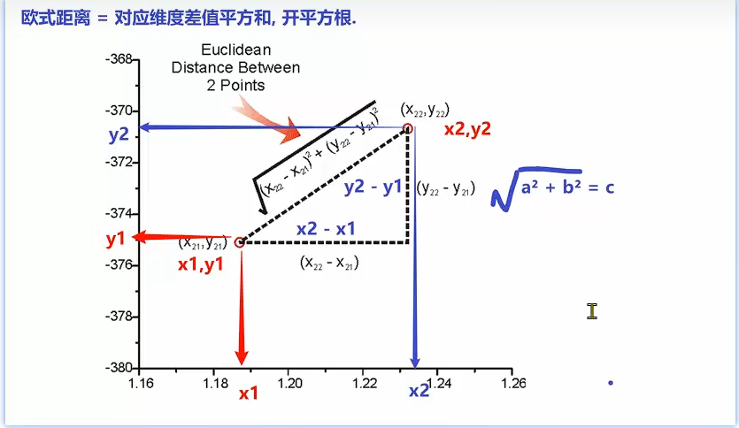
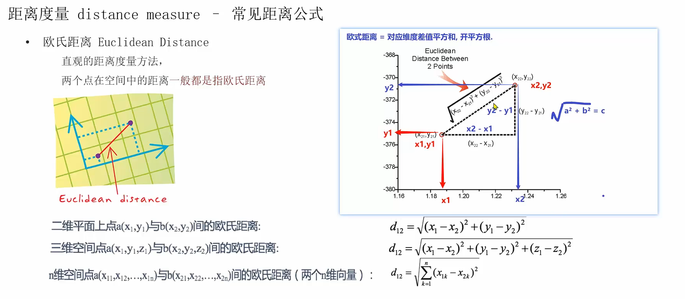
曼哈顿距离/城市街区距离：
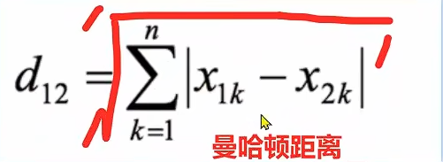
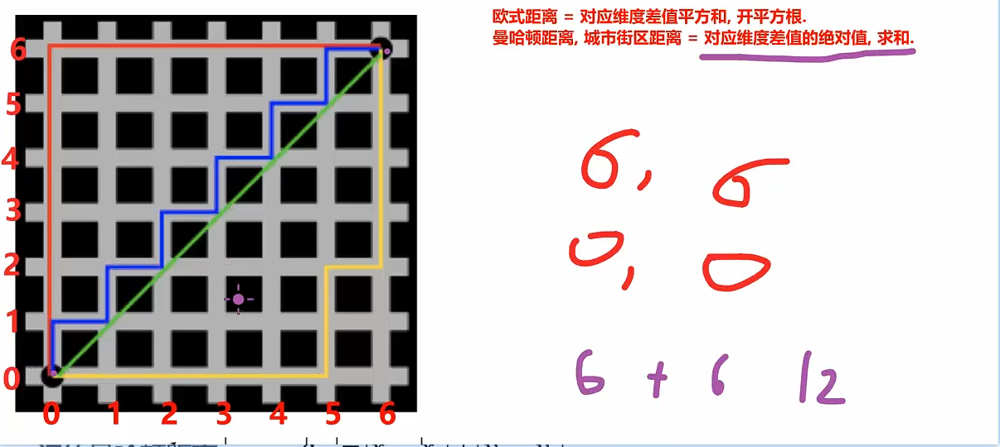
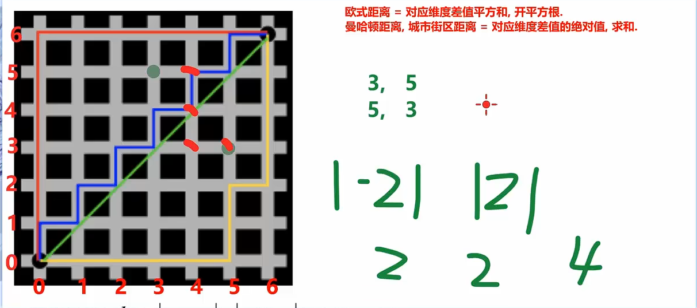
- 切比雪夫距离：
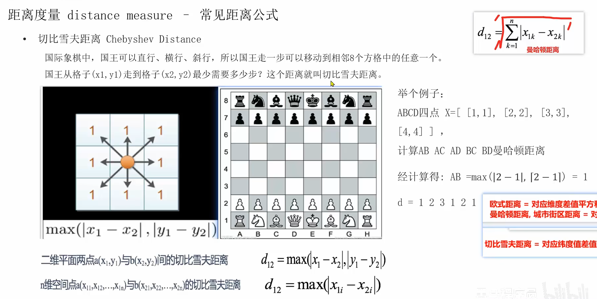
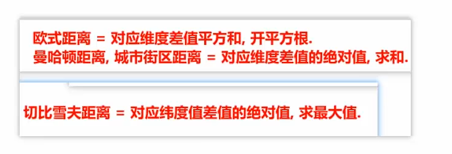
- 闵可夫斯基距离/闵氏距离：
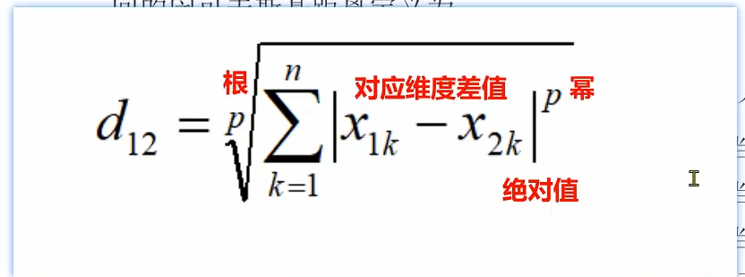
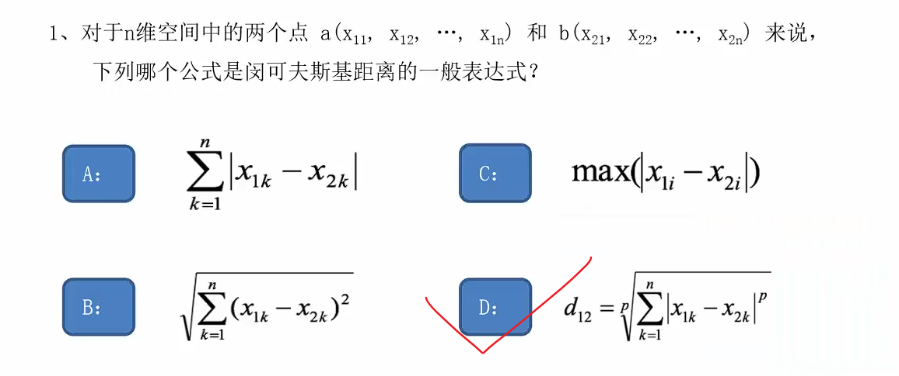
二、机器学习步骤
1. 特征提取
- 什么是特征提取？
- ==专家使用专业背景知识和技巧处理数据，提高模型的准确率/机器学习的效率==
2. 特征预处理
- ==为什么做归一化和标准化==：
- 为解决量纲(单位)问题，当两列数据的单位不统一时我们需要对数据做一个统一化处理，所以引申出归一化和标准化的概念
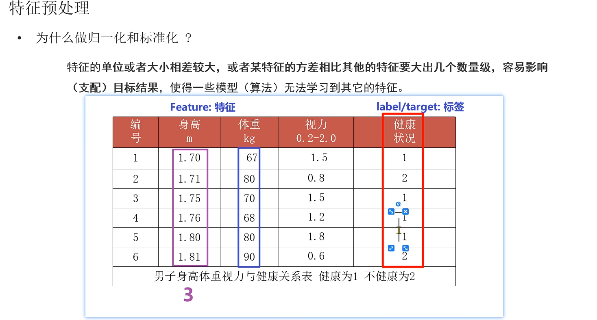
- 归一化
- 计算公式： （当前值-最小值）/（最大值-最小值）
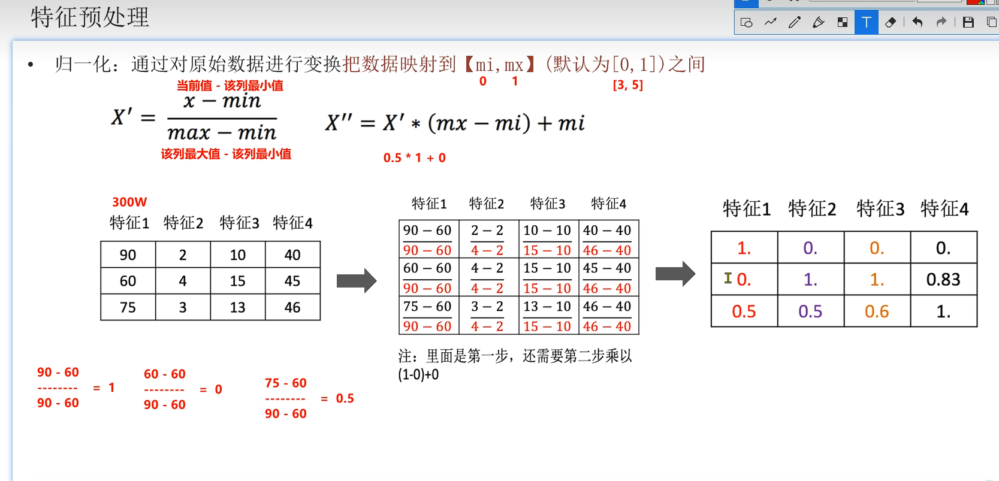
==标准化（掌握）==
- 计算公式：标准化 = （当前值 - 平均值）/（标准差σ）
- 标准差σ = 方差开根号
- 方差 = 该列的每一个值与该列均值的差值平方和的平均
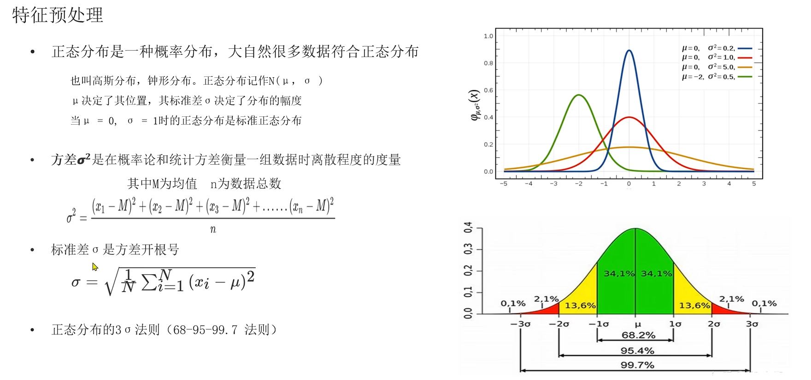
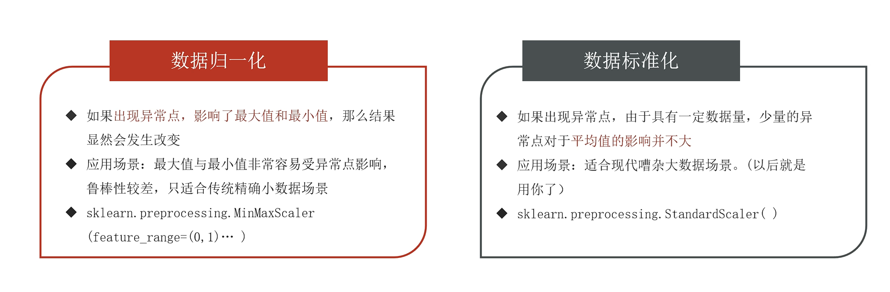
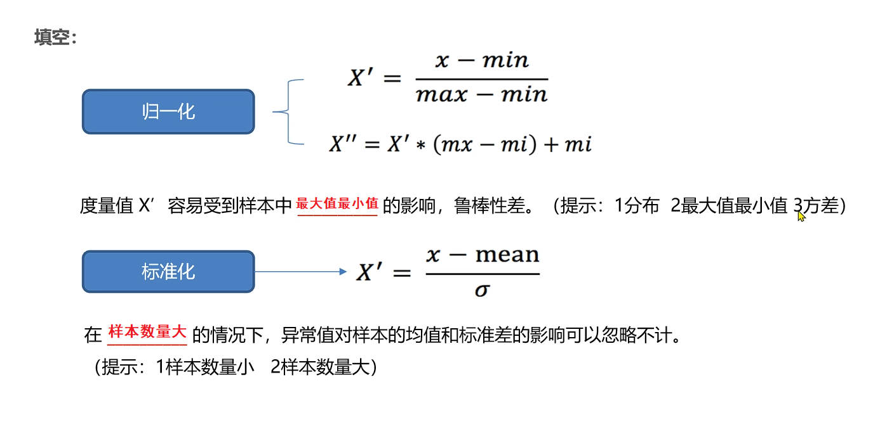
3. 特征降维
4. 特征选择
5. 特征组合
三、利用KNN算法对鸢尾花分类
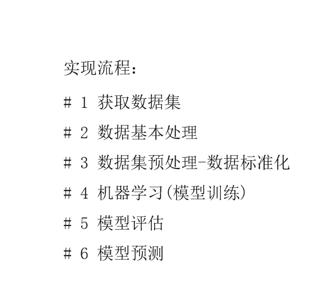

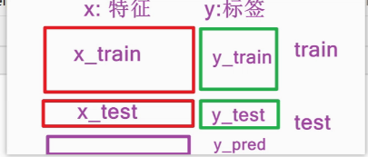
- 代码实现
1 | # 导包 |
四、网格搜索和交叉验证
1. 底层原理：
- 拿着数据集划分为训练集和测试集
- 训练集单独拿出来做网格搜索和交叉验证
- 手动确定超参数组合情况
- 如果是多种超参数它们会==两两匹配 (笛卡尔积)==
- 再指定训练数据交叉验证的次数n
- 每次超参数组合都会有n个分数，我们取它们的==平均值==作为此次结果
- 最后找出==平均值最大的超参数组合==
- 创建模型指定相对最优超参数
- 拿着所有训练集做训练
- 拿着所有测试集做评估
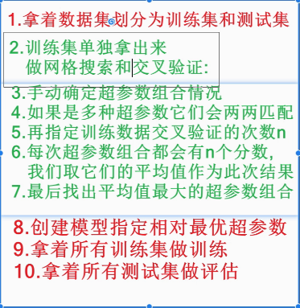
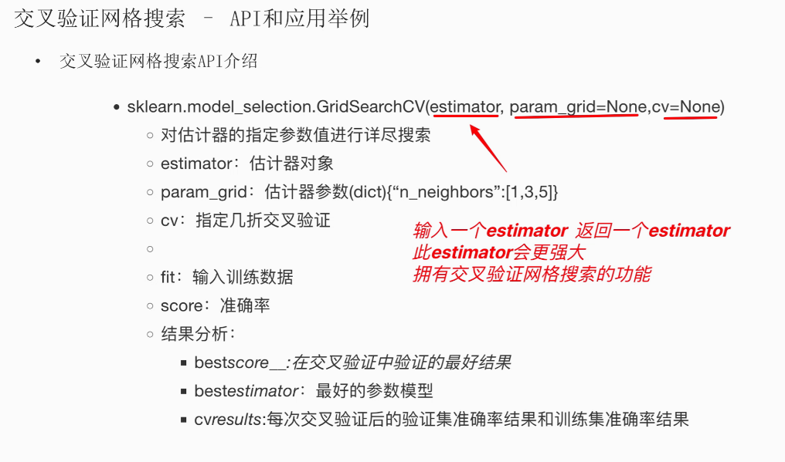
- 代码实现：
1 | import pandas as pd |
为什么不能对每个数据集都重新fit？
1. 防止数据泄露 (Data Leakage)
- 如果x_test测试集也使用fit相当于是**==偷看了==训练集的统计信息/==（标准答案）==**
- 导致模型的性能被严重高估，违背了独立评估的原则
2. 保持数据分布一致性
- 测试集如果重新fit会导致训练集的分布特征发生改变
- 如果测试集用不同的统计量**（不同的均值、标准差）转换，==分布就变了==**
- 模型在新分布上表现会很差（导致训练和测试数据==不在同一“尺度”上==）
3. 建议：
- 可以先fit再transform
- 或对训练集x_train使用fit_transfrom，其余测试集x_test使用transfrom即可
切割数据集train_test_split()中为什么使用shuffle参数？
- shuffle：直译为“洗牌”，意思是**==将数据集中的样本打乱顺序==**不按照顺序读取，以免发生模型不学习其他特征的问题，提高模型的训练效果。
大白话解释 shuffle
比如你有一份数据集:前100行都是”猫”的特征，后100行都是”狗”的特征。如果直接用这份数据训练模型，模型可能不学特征(比如耳朵形状、体型)，反而只记”前100行是猫，后100行是狗”这就是”顺序偏见”。
shuffle就是把这些数据的行随机打乱，变成”猫、狗、猫、猫、狗…的随机/顺序，让模型只能通过真实特征判断类别，而不是靠位置作弊。